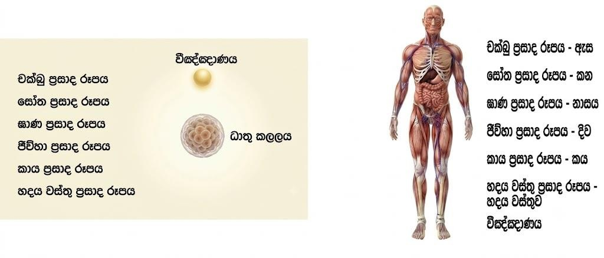

නමෝ තස්ස භගවතෝ අරහතෝ සබ්බ ධම්මේසු අප්පටිහත ඥානචාරස්ස දසබලධරස්ස චතුවෙසාරජ්ජ විශාරදස්ස සබ්බසත්තුත්තමස්ස ධම්මිස්සරස්ස ධම්මරාජස්ස ධම්මස්සාමිස්ස තථාගතස්ස සබ්බඤ්ඤුනෝ සම්මා සම්බුද්ධස්ස !!!
භාග්යවත් වූ අරහත් වූ සියලු ධර්මයන්හි නොපැකිල ඥාන හැසිරීම සහිත වූ දසබලධාරී වූ චතුර්වෛශාරද්යත්ව විශාරද වූ සියලු සත්වයන්ට උත්තම වූ ධර්මයට ඊශ්වර වූ ධර්මරාජ වූ ධර්මස්වාමි වූ තථාගත වූ සර්වඥ සම්මා සම්බුදුරජාණන් වහන්සේට මම නමස්කාර කරමි !!!
ධර්මයේ යනුවෙන් අදහස් කරන්නේ කුමක්ද, යම් සත්වයකුගේ මරණාසන්න මොහොතේදී එම සත්වයා දුගති ගාමී නොකර සුගති ගාමී කරන යම් ස්වභාවයක් ධර්මය ලෙස හඳුන්වනු ලැබේ. එනම් සත්ය ධර්මයක් දරාගන්නා සත්වයෙක් ඇත්තනම් එසේ දරාගන්නාවූ ධර්මය විසින් එම සත්වයා දරාගෙන සිටීමයි. ඒබව ථේර ගාථා පාළියෙහි මෙලෙසින් දක්වන ලදී.
ධම්මෝ හවේ රක්ඛති ධම්මචාරිං-ධම්මෝ සුචිණ්ණෝ සුඛමාවහාති
ඒසානිසංසෝ ධම්මේ සුචිණ්ණේ-න දුග්ගතිං ගච්ඡති ධම්මචාරි
ධර්මයේ හැසිරෙන කෙනාව රැකගන්න ධර්මයට පුළුවන්. යහපත් ලෙස රැස් කරගත් ධර්මය තමයි සැප ලබාදෙන්නෙ. යහපත් ලෙස ධර්මය රැස්වීමේ ආනිශංසය මේකයි. ධර්මයේ හැසිරෙන කෙනා දුගතියක යන්නෙ නෑ.
උපුටා ගැනීම - ඛුද්දක නිකාය, ථේර ගාථා, ධම්මිකත්ථේරගාථා https://www.tripitaka.online/sutta/15507
ජීවිතයේදී අපට එදිනෙදා ලැබෙන්නාවූ විවිධ වූ අත්දැකීම් නිසා දැවීම්, තැවීම් විඳිමින් එසේ සකස් වන්නාවූ දුක් ගැහැට නැති කරගැනීම සඳහා යම් යම් ක්රියාකාරකම් සිදු කරමින් එදිනෙදා ගෙවා දැමීම අප සම්මුති ජීවිතයේදී සිදු කරනු ලැබේ. මෙසේ සකස් වන්නාවූ ධර්මතාවයන් සසරේ සෑම භවයකම එක සේ එසේ පවතින්නාවූ ධර්මතාවයන්ම වේ. මෙලෙසින් පවත්නා දුක්ඛිත සසර ගමන නවතා දැමීමට අප විසින් සත්ය වශයෙන් දුක් ස්වභාවය අවබෝධ කර ගත යුතුවේ. එසේ අවබෝධ කරගැනීම සඳහා සත්ය වශයෙන් දුක, දුකට හේතුව, දුක නැති කිරීම, දුක නැති කිරීමේ මාර්ගය පිලිබඳව සත්ය වශයෙන් පවත්නාවූ ධර්මයක් අප විසින් ඉගෙනීම, අනුගමනය කිරීම, පිළිපැදීම ආදී දේ සිදු කල යුතුවේ. එලෙසින් තුන් කාලයේම පවත්නා වූ ආර්ය සත්ය දේශනාවනම් අප සරණ ගියාවූ ඒ භාග්යවත් අර්හත් සම්මා සම්බුදුරජාණන් වහන්සේ විසින් දේශනා කරන ලද ආර්ය සත්ය දේශනාවයි.
යම් ධර්මයක් අවබෝධ කරගැනීම සඳහා එසේ පවත්නා වූ ධර්මය පිළිබඳව චින්තන හැකියාවක් තිබිය යුතුය. එනම් භාග්යවතුන් වහන්සේ දේශනා කල ප්රඥප්ති සමග ගනුදෙනු කිරීමට හැකියාවක් තිබිය යුතුය. මෙසේ ගත්කල තිරිසනුන් සදහා එලෙස උප්පත්ති ප්රඥාවක් නොපිහිටයි. තිරිසනුන්ට ඇත්තේ අර්ථ ප්රඥප්තීන්ය එනම් යම් හැඩතල රාමුවක් යටතේ හැඳිනීම් සකස් කරගැනීමක් සිදු කරගනී නමුත් තිරිසන් ගත සත්වයාට එය විස්තර කිරීමේ හැකියාවක් නොමැත. නමුත් අපට යම් දෙයක් ගැන එහි ස්වභාවයන් පිලිබදව විවිධ අර්ථයන් දෙමින් විස්තර කිරීමේ හැකියාව පවතී.
සත්වයා මෙසේ සසර නොයෙක් දුක් විදිමින් ගමන් කරන්නේ චිත්ත සන්තානය සමග යෙදෙන්නාවූ රාග, ද්වේශ, මොහාදී පාපිය ධර්මතා නිසාය. ධර්මය අධ්යනය තූලින් මෙසේ යෙදෙන්නාවූ පාපිය ධර්මතා නිවැරදිව හදුනා ගනිමින් එම පාපිය ධර්මතා මැඩලමින් සසර ගමන නැවත සකස් වීම නවතා දැමීමට හැකිවේ. මෙසේ යෙදෙන්නාවූ රාග, ද්වේශ, මොහාදී පාපිය ධර්මතාවයන්ගේ අවසාන ඵලය නම් දුක සකස් වීමවේ. එබැවින් සසර දුක නැතිකරගැනීම සදහා ධර්මය ප්රත්ය කරගනිමින් රාග, ද්වේශ, මොහාදී පාපිය ධර්මතා නිරුද්ධ කල යුතුවේ.
දුක සකස් කරගැනීම සිදු කරගනුයේ අප විසින් යන්නෙහි අදහස විමසා බැලීමේදී එසේ දුක සකස් කරගනුයේ කෙසේද යන්න අප විසින් දැනගත යුතුවේ. භාග්යවතුන් වහන්සේ දේශනා කරන්නේ අප දුක සකස් කරගන්නේ අපගේ බඹයක් වූ ශරීරය තුලම බවය. එලෙසින් බඹයක් වූ අප ශරීරය මුලික වී කෙසේ දුක සකස් කරන්නේද යන්නද අප විසින් ප්රඥවචෙන් විමසා බැලිය යුතුවේ. එසේ විමසා බැලීමේදී ප්රායෝගිකව අපට වැටහෙන කරුණ නම් දුක සැදීම සිදු කරන්නේ අපගේ සිතේ මුලිකත්වයෙන් බවය. එනම් යම් දැවෙන තැවෙන ස්වභාවයන් පිලිබදව සිතීමට යාමෙන් ඒ පිලිබදව ගොඩනගා ගන්නාවූ සිතුව්ලි තූලින් දුක සකස් කරගන්නා බව අපට දැනීමක් ඇත.
උදාහරණ: අපගේ ශරීරයේ ස්ථානයක යම් වේදනාවක් හටගත් අවස්ථාවක ඒ ගැන දැනගන්නේ සිතෙනි, ඒ සම්බන්දයෙන් විවිධ තර්ක ගොඩනගා ගන්නේ සිතෙනි, ඒ වේදනාවට විසදුම් සෙවීමද සිදු කරනුයේ සිතෙනි, වේදනාව නැති වූ පසු එහි සුඛ ස්වභාවය විදින්නේද සිත මුලික කරගනිමින් වේ.
මෙසේ දුක සකස් කරගැනීම සිතෙහි මුලිකත්වයෙන් සිදු වුවත් ඒ හා යෙදෙන අපගේ බඹයක් වූ ශරීරයේ පවතනා ස්ථාන මොනවාද යන්න අප විසින් අවබොධ කරගත යුතුය. ආර්ය පර්යේෂණයේදී භාග්ය වතුන් වහන්සේ අපගේ සිතත් සමග දුක සකස් වීමට ප්රධාන වශයෙන් යෙදෙන්නාවූ අපගේ බඹයක් වූ ශරීරය තුළ පවත්නා ස්ථාන පිළබදව සොයා ගන්නා ලදී. එසේ දේශනා කරන ස්ථානයන් දුක සකස් කිරීමට හේතු/උපකාර වචන බව භාග්යවතුන් වහන්සේ ආර්ය පර්යේෂණය දේශනාව තුලින් අපට දේශනා කර ඇත. ආර්ය පර්යේෂණයෙදී භාග්යවතුන් වහන්සේ විසින් මෙසේ දුක සකස් කිරීමට සෘජුව සම්බන්ධ චන්නාවූ ප්රත්ය/හේතු/උපකාර වන අපගේ බඹයක් වූ මේ ශරීරයේ පවත්නා අවයව ලෙස ඇස, කන, නාසය, දිව, කය, හදය වස්තු රුපය හා මනස යන්නාවූ ඉන්ද්රියන්/ආයතන/භූමින් පිලිබදව දේශනා කරන ලදී. මෙසේ පවත්නා මෙම ඉන්ද්රියන්/ආයතන/භූමින් හේතු/උපකාර කරගනිමින් සකස් කරගන්නාවූ දුක නිසා සත්වයා සසරේ යන බව භාගාාවතූන් වහන්සේ දේශනා කරන ලදී.
ආර්ය පර්යේෂණයේදී භාග්යවතුන් වහන්සේ බඹයක් වූ අප ශරීරයේ සියළු කොටස් ගැන දේශනා නොකර ඇස, කන, නාසය, දිව, කය, හදය වස්තු රුපය හා මනස වන්නාවූ ඉන්ද්රියන්/ආයතනං/භූමින් පිලිබදව දේශනා කරන්නේ දුක සකස් වීමට ප්රධාන වශයෙන් යෙදෙන්නාවූ/ප්රත්ය/උපකාර වන්නාවූ ස්ථාන නිසාය. මෙසේ තිබෙන්නාවූ ඉන්ද්රියන් චලින් ප්රධාන වශයෙන් බබයක් වූ ශරීරය ක්රියාත්මක කිරීමේ හැකියාව පවතින්නේ හදය වස්තූ රුපයටයි එනම් මනස/සිත/වීඤ්ඤාණය පචතින්නේ හදය වස්තුවේ පිරිසිදු ලේ ධාතුව භුමිය කරගනිමින් පවතින්නාවූ හදය වස්තු රුපය ඇසුරු කරගනිමින් වේ. එලෙසින් පචතින්නාවූ මනස/සිත/වීඤ්ඤාණය අනෙක් භූමින් වල එනම් ඇස, කන, නාසය, දිව, කය යන්නාවූ ස්ථානයන් වල සුදුසු පරිදි අරමුණු ගැනීමට පහල වීම සිදු වේ. එසේ සිත අරමුණු නොගන්නා සැම වෙලාවේදීම මනස/සිත/වීඤ්ඤාණය පවතින්නේ හදය වස්තූ රුපය ඇසුරු කරගනිමින් චේ. (උදා: සත්වයා නින්දට ගිය අවස්ථාවේ) එලෙස පචනින්නාවූ මනස/සිත/වීඤ්ඤාණය යෙන් අරමුණක් ගත හැක්කේ එක වරකට එක් භූමියකින් පමණි නමුත් අරමුණු ගන්නා වේගය/සිතේ සකස් වීමේ වේගය නිසා අපට හැගෙන්නේ මේ ක්රියාකාරිත්වය එක චර සිදුවන්නාක් මෙනි.
මෙසේ අප බඹයක් වූ ශරීරයේ පවත්නා මෙම ඉන්ද්රියන්/ආයතනංභූමින් හා සිත පිළිබදව දැන ගැනීමේදී ඒ ඒ වයස් කාල සිමාවන් වල එගහි පැවැත්ම අප විසින් අනුමාන වශයෙන් දැනගැනීම සිදු කරයි. මෙගිදී යම් සත්වයකුගේ ප්රතිසන්ධියට ප්රථම මවගේ හා පියාගේ ධාතු කළලය මත මෙම ඉන්ද්රියන්/ආයතනං/භූමින් හා සිත පිහිටීමක් නැති බව දැනගත යුතුවේ. යම් සත්චයකු චුතියේදී/මරණයේදී පවත්නා මෙම ඉන්ද්රියන්/ආයතන/භූමින් නැවත ප්රතිසන්ධි අවස්තාවට ගෙන ඒමක් නොවේ. එනම් යම් සන්වයෙක් චුනියෙන් පසු එසේ පවත්නා සිත/වීඤ්ඤාණය පමණක් වර්තමාන බවයේ පහල වීමක් සිදු වේ. මෙසේ ධාතු කළලයේ පහල වන්නාවූ සිත/වීඤ්ඤාණය විසින් ප්රතිසන්ධි (පිළිසිද ගැනීමේ අවස්ථාව) අවස්ථාවේදී ඇස, කන, නාසය, දිව, කය, හදය වස්තූ රුපය යන්නාවූ ඉන්ද්රියන්/ආයතන/භූමින් සුදුසු පරිදි සකස් කරගැනීම සිදු කරගනී.

පෙර භවයේ චුතියෙන් මෙලෙස ප්රතිසන්ධියේදී ධාතු කළලයට බැසගන්නාවූ සිත/වීඤ්ඤාණය කිසිදු අතරක් නැතිව පෙර පසු නොවී චුතියත් සමගම ධාතු කළලයට බැසගැනීම සිදුවේ. මෙසේ ප්රතිසන්ධියෙන් අනතුරුව ධාතු කළලය කන බොන අහාර ප්රත්ය කරගනිමින් වැඩිම සිදු වන අතර එසේ වැඩීමේදී ප්රතිසන්ධියේදී සකස් වූ ඉන්ද්රියන්/ආයතනං/භූමින් සුදුසු පරිදි ඒ ඒ ස්ථාන වල පිහිටම සිදුවේ.
දේශනාවේ YouTube සබැදියාව: https://www.youtube.com/watch?v=AEz2MK9bprw